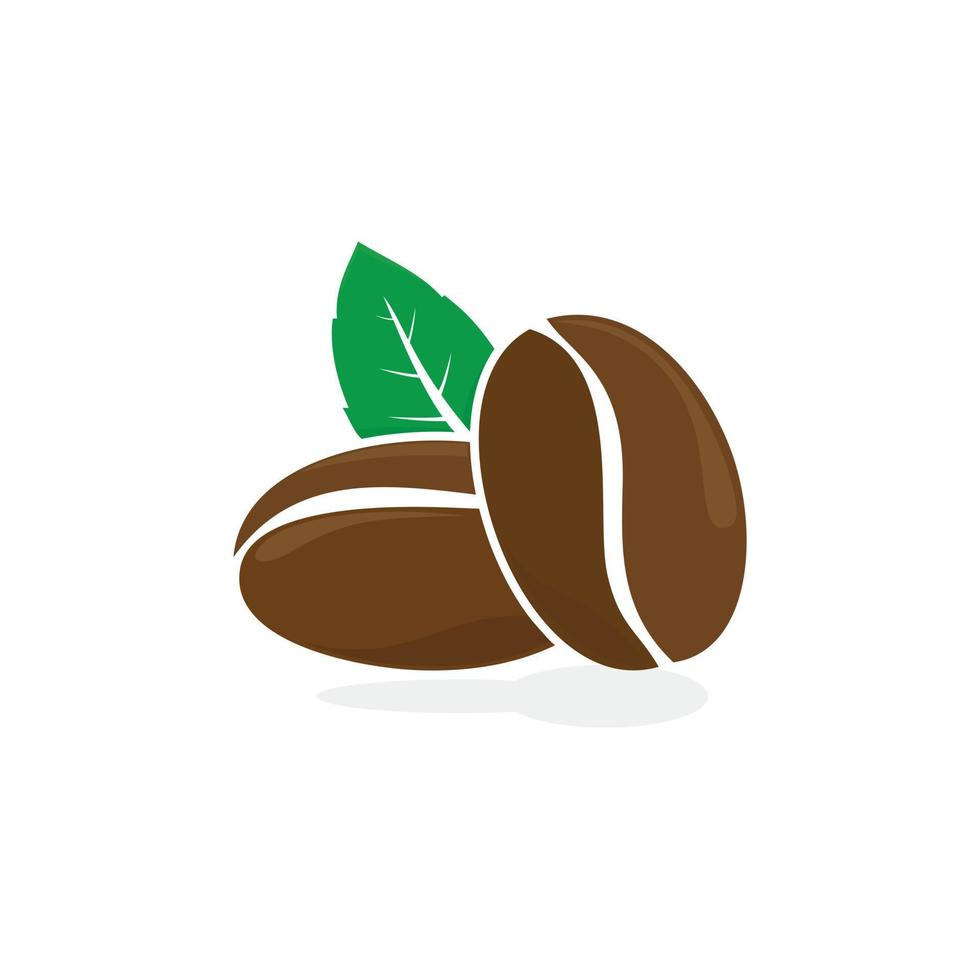

Sobre Nosotros
Descubre la experiencia inigualable de nuestro café premium, cultivado en las mejores tierras productoras y seleccionado cuidadosamente para ofrecerte el sabor más fresco y auténtico. Con un perfil de sabor suave, con toques de notas frutales y un final dulce, cada taza de nuestro café es una invitación a disfrutar de un momento único. Ideal para comenzar el día con energía o para una pausa perfecta en cualquier momento. Disponible en granos o molido, para que disfrutes de la máxima frescura en cada preparación. ¡Haz de tu día una experiencia deliciosa con nuestro café de alta calidad!